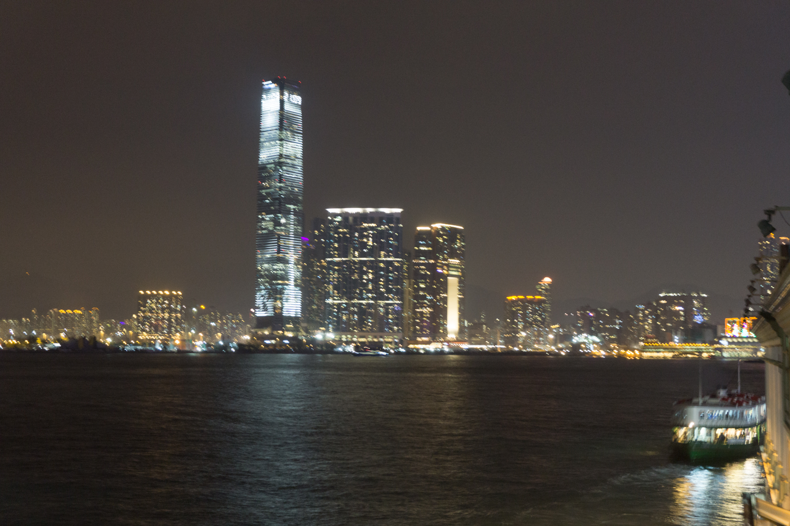
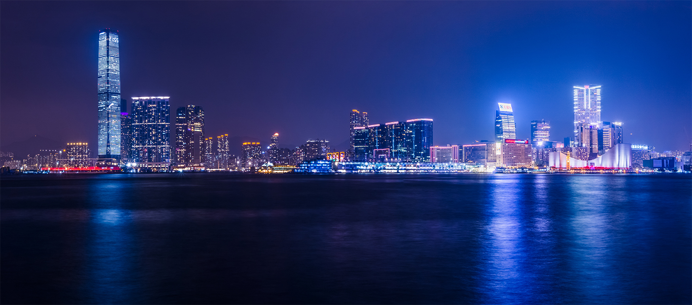

Photography over the many years has grown from just a way to document a moment as it happens to a way of expressing a certain feeling through the photo. With that change, photographers have looked for ways to creatively express those feelings, mood, and atmosphere in their photos by creating their own style of photography. This means the certain look to a photo, and this also helps the photographer differentiate himself or herself from the many other photographers. One of the ways that is most widely used by all types of photographers to create their own style is post-processing.
The origin of post-processing dates all the way back to film photography. The enthusiastic film photographers used many different techniques that were non-standard at the time to create their own style to stand out of the crowd. These film photographers used techniques that took advantage of the time and temperature the film developed in the chemicals; they used techniques like cross processing to create unique color effects; they used techniques like the Orton effect to create a dreamy like atmosphere; and they even used film strips designed for different types of results. This all paved the way for the transition into digital photography. The first digital camera was created in the 1970s, but this idea of digital photographs did not really take off until the 1990s when digital cameras became more available for the general consumer market. Also in 1990, Adobe Photoshop 1.0 was released (Trenholm, Richard). As more photographers had Photoshop easily available on their own computers, it forever changed the landscape of photography. Photographers now have unlimited and unregulated ability to post-process their photos, and it begs the question of how much post-processing is too much?
The solution to the unregulated ability to post-process photos is not to eliminate post-processing entirely, but we as photographers need to change our mindset of how we think about photography and post-processing. To do this, first I will define what a photograph is, and then what photography is. The etymology of the word ‘photograph’ literally comes from the Greek words ‘photos’ or ‘phos’ and ‘graphos’ (Etymology of ‘Photography’). This literally means ‘light writing’ or ‘light painting’. This tells us that a photograph is a composition of light, but it does not describe how the light is presented as a final photograph. It never says anything about what a photographer can do to the information of light after taking the photo. Next, Dictionary.com says that photography is “the process or art of producing images of objects on sensitized surfaces by the chemical action of light or of other forms of radiant energy, as x-rays, gamma rays, or cosmic rays” (Photography). This tells us that photography is the process or art form of producing image which means that it is not just about capturing an image, but also about producing it. Also, it says the it is an art not just a way of documenting a moment. The art means that there is a creative aspect when the artist can convey a certain message with the feelings, mood, and atmosphere created within the artwork (and in this case, that is the photograph). Also, it says that photography is a process which means that there is more than just hitting the shutter button to capture a photo. All this evidence implies that there is more to photography than just a photographer clicking the shutter button, but that it is a process when the photographer can paint a message with this art form by creating a certain feeling, mood, and atmosphere.
Many photographers in this digital age including myself are now more closely identifying as artist with a camera opposed to a photographer who just clicks the shutter button. Also, the work that these more experience photographers create more closely resembles an artwork because they know how to create a certain feeling, mood, and atmosphere in their photos. A prime example of this is travel and adventure photographer, Chris Burkard. He works his own photography business, and his responsibilities include not only just photography, but also directing video, speaking or teaching about photography, consulting, etc. Chris Burkard says, “I used to describe myself primarily as a photographer, but nowadays I consider myself more as an artist since the work I do is multifaceted” (Burkard, Chris). For him and many other experienced photographers, it is being more of an art form.
For example, a beginning photographer might snap this photo.
I took this photo while I was just testing out compositions along the pier, but really didn’t like it too much. Also, I think I kicked the tripod or something because it turned out pretty blurry with too many distractions. But for demonstrative purposes, it serves as a photo a beginner photographer might take and be satisfied with. Now, the photo below is a photo a more experienced photographer might take this.
I took this photo a little further along the pier, and I captured a much better atmosphere and feeling that better represented the feelings I felt while looking out from the pier. This photo captures the wide immense skyline with the water reflections and city lights. It also captures the feeling of a colder environment because of the cooler blue tones. There are no distractions in this photo compared to the right side and foreground of the other photo. Finally, it is also more technically sound with no noise, higher resolution, wider view, and more visually appearing photo. All of these decisions to create this photo were all thoughtfully made before the photo was taken, and then it was post-processed to complete that effect. First, I took 3 photos at a long exposure. The 3 photos allowed me to blend them together with post-processing to create a wider than normal view, and the longer exposure highlighted the city lights and reflections. The cooler color tones were simply done by changing the color temperature to a cooler Kelvin temperature to better create the atmosphere I was going for. These decisions show how a photographer can create a photo that can be a work of art.
One post-processing technique that almost makes a photographer feel like a painter is called the dodge and burn. This technique like many other techniques in digital post-processing originated from film post-processing. Bruce Warren, who is a well published photographer in the film days, explains a post-processing technique for film called bleaching. He describes it as lightening certain parts of the photo by applying photographic bleaches with a brush (Warren 331). This film post-processing technique literally used a soft brush to ‘paint’ on bleach which slightly brightens the exposure of that specific part of the photo. The dodge and burn technique used in Photoshop does the same function by ‘painting’ a digital brush to slight brighten or darken specific areas of the photo. This technique is used to create greater local contrast and dynamic range in the photo which in turn can help a photographer create a better feeling, mood, and atmosphere in the photograph.

The first photo above is a photo I took and edited minus the dodge and burn adjustments. It looks like a well composed photo with nice color tones that create a good snowy and cold feeling, mood, and atmosphere; however, it seems slightly washed out in the center of the frame. The second photo is the same photo as the first photo except with some simply dodge and burn adjustments. I just used a digital brush and ‘painted’ along the pathway to slightly darken the highlights. Now, the slightly washed out and over exposure center portion of the photo is no longer washed out and we can see detail along the pathway. Also, this helps create a better composition because the leading pathway brings the viewers eyes into the photo without being distracted from the washed out part. Thus, it creates a better feeling, mood, and atmosphere.
Since a photographer is an artist with a camera, post-processing allows the photographer to complete their photo to create that particular mood and atmosphere. It gives the photographer that extra creative freedom to their creative vision. Post-processing is entirely okay to use to photography because each photo is a piece of artwork. Many different photographers have different tastes and styles they like which means that some photographers may post-process a photograph a little more than any other given photographer. That does not make the photographer who processes their photo more better, it just means that they use post-processing a little more to achieve the feeling, mood, and atmosphere in their photos.
Overall, post-processing should be used by every photographer to convey the feeling, mood, and atmosphere through their photo. Photos are a piece of art from the photographer, and post-processing allows the photographer the creative freedom to complete their artwork. It is up to the photographer to decide how much they want to use post-processing in their work. The issue of over processing a photo is not a problem because photographers are defined as artists with cameras not a person who clicks a shutter button. Any two photographers may post-process their photos different amounts, but that does not make the photographer who processed their photo more than the first wrong. It just means that he/she processed his/her photo to that particular amount that conveys his/her feelings, mood, and atmosphere which happened to be more than the other photographer was satisfied with.
Works Cited
Burkard, Chris. “FAQ.” FAQ - Chris Burkard, www.chrisburkard.com/About/FAQ. Accessed 5 Feb. 2017.
“Etymology of 'Photography'.” Oxford Reference, 15 Jan. 2017, www.oxfordreference.com/view/10.1093/oi/authority.20110803100324562. Accessed 5 Feb. 2017.
“Photography.” Dictionary.com, www.dictionary.com/browse/photography. Accessed 10 Apr. 2017.
Trenholm, Richard. “Photos: The History of the Digital Camera.” CNET, 2 Nov. 2007, www.cnet.com/news/photos-the-history-of-the-digital-camera/. Accessed 9 Mar. 2017.
Warren, Bruce. “Special Techniques.” Photography, West Publishing Company, St. Paul, MN, 1993, pp. 299–336.